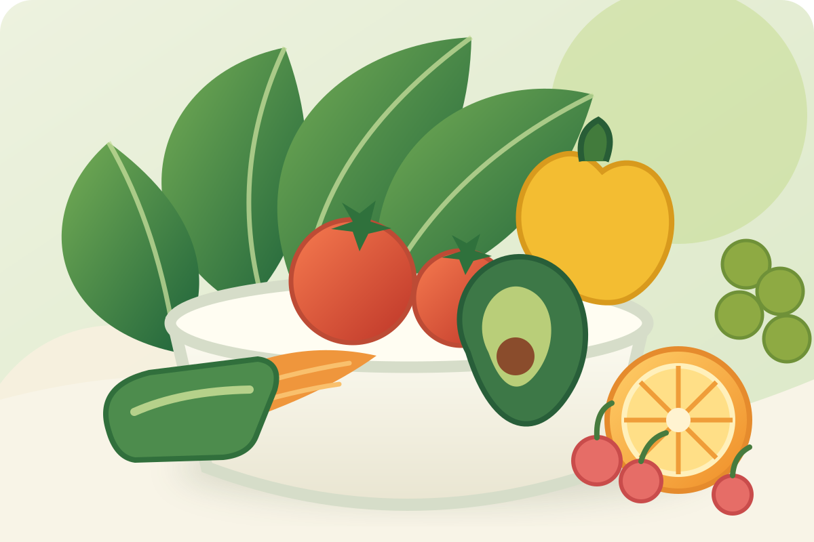

ESCOLHA SUA COMPOSIÇÃO
Feirinha Hortejo
Três opções de feirinha, cada uma por R$ 129,90. Confira exatamente o que acompanha cada composição:
Tenho interesseHORTEJO DELIVERY · EAT GREEN
Frutas, verduras e opções frescas para facilitar a rotina de pessoas, famílias, empresas e instituições. Cuidado em cada escolha, praticidade em cada entrega.
Feirinha · Bowls · Salada de frutas · Kits personalizados

NOSSO CARDÁPIO
Escolha suas opções favoritas ou fale com a gente para montar um kit de acordo com a sua necessidade.
Três opções de feirinha, cada uma por R$ 129,90. Confira exatamente o que acompanha cada composição:
Tenho interesseUma opção prática e fresquinha para acompanhar sua rotina.
Frutas cortadas e prontas para consumir, em porção individual.
Montamos combinações de produtos conforme sua necessidade, preferência, quantidade e rotina.
Monte meu kitCondições dos pedidos: solicite com no mínimo 1 dia de antecedência. A entrega é grátis para pedidos a partir de R$ 100,00. Os preços e a disponibilidade dos produtos podem sofrer alterações; confirme as condições no momento do pedido.
HORTEJO PARA ORGANIZAÇÕES
Da rotina de uma equipe a projetos institucionais e eventos: conversamos com você para entender o cenário e desenhar uma solução viável.
EMPRESAS · EQUIPES · EVENTOS
Oferecemos soluções que ajudam empresas a levar mais praticidade e cuidado com a alimentação para seus colaboradores e convidados. O formato é construído em conjunto, respeitando a rotina, o volume e o orçamento de cada projeto.
Entregas programadas em dias específicos da semana, do mês ou diariamente.
Condições especiais para colaboradores e pedidos individuais.
Opções frescas para encontros, ações internas, campanhas e datas especiais.
Cardápio, formatos, quantidades e logística definidos em conjunto.
CCAS · NCIS · ORGANIZAÇÕES
Sabemos que oferecer alimentação de qualidade envolve planejamento, orçamento, logística, quantidade de pessoas atendidas e a rotina de cada organização.
A Hortejo tem experiência no fornecimento de alimentos e na organização de entregas para diferentes necessidades. Queremos colocar essa experiência a serviço de CCAs, NCIs e outras instituições, construindo alternativas que conciliem custo, logística e qualidade dos alimentos.
Sua instituição tem uma necessidade específica? Vamos conversar e construir uma solução juntos.
Quero conversar sobre uma parceriaQUEM SOMOS
A Hortejo é uma marca local com uma trajetória construída junto à comunidade da Vila Leopoldina. Nosso propósito é levar alimentação saudável para a rotina das pessoas, com soluções práticas, alimentos frescos e atendimento próximo.
Trabalhamos para que cuidar da alimentação seja mais simples e possível em diferentes momentos da vida — em casa, no trabalho, em eventos e em instituições.
FALE COM A HORTEJO
Conte um pouco sobre o que você precisa. Nossa equipe poderá entender sua demanda e retornar para conversar sobre possibilidades, formatos e condições.